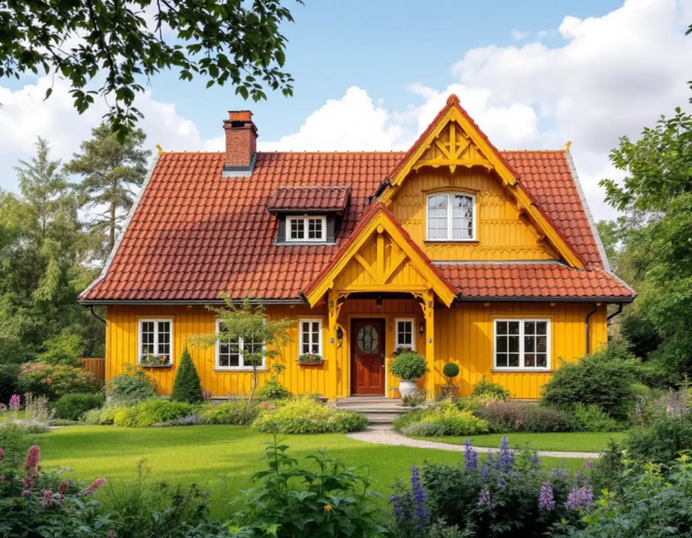
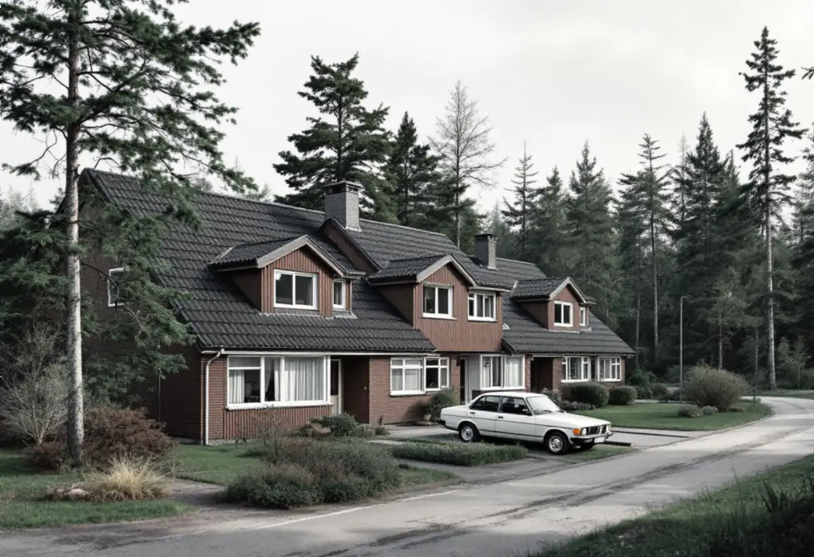

Platsbesök med tomten i fokus
Vi går igenom tak, vind och skorsten och ser hur ställning och material kan komma fram på en sluttande eller bergig tomt.
En takrenovering i Huddinge gäller oftast antingen ett tegeltäckt egnahem från 1910–40-talet i Stuvsta, Snättringe eller Segeltorp, eller ett grupphus från 1960–80-talet i till exempel Skogås och Sörskogen. I båda fallen byts underlagspapp, läkt och plåtdetaljer, och pannorna läggs tillbaka när de fortfarande håller.

Huddinges villabebyggelse växte fram längs Västra stambanan, som öppnade för trafik 1860. Enligt kommunens kulturmiljöprogram började Hörningsnäs villastad och Stuvsta egnahemsområde byggas i början av 1900-talet, och under 1920-talet styckades gårdarna Segeltorp och Snättringe av till villatomter.
Efter kriget kom små villor, kedjehus och de första radhusen, där tegel och puts är tongivande för 1940–50-talet. Under rekordåren och fram till början av 1980-talet byggdes grupphusområden, bland annat Sörskogen söder om Huddinge centrum, Utsälje vid Snättringe och de terränganpassade småhusen i Östra Skogås.
En tredje grupp är de gamla sommarstugeområdena vid sjöarna. Vid Mellansjö och Trehörningen byggdes sportstugor från 1910–30-talet, och vid Gömmarens södra stränder växte ett sportstugeområde fram. Många av stugorna har sedan permanentats och byggts till i flera omgångar.

Kulturmiljöprogrammet beskriver egnahemmen med träpanel, spröjsade fönster och sadeltak eller brutna tak täckta med tegel. På sådana tak är det sällan teglet som ger upp först, utan underlagspappen, läkten och plåten i ränndalar och runt skorstenen. Ett brutet tak har dessutom en knäck där snö och smältvatten blir liggande.
På 1960–80-talets grupphus varierar takformen enligt programmet från kraftigt lutande sadeltak till flacka valmade tak och pulpettak. Ju lägre lutning, desto mer hänger tätheten på underlaget och på detaljerna vid takfot och anslutningar. På de permanentade stugorna möts ofta gammal och ny takdel i skarvar som inte är byggda för att hålla tätt i årtionden.
Kommunen beskriver Huddinges landskap som småbrutet, med stora skogsklädda höjder och kala bergsknallar, och med odlingsmark i dalgångarna kring sjöar som Orlången och Lissmasjön. För taken betyder det skugga från tall och gran, barr i hängrännorna och takfall som torkar långsamt efter regn.
Många hus står på sluttande tomter med berg i dagen. Det styr var ställningen kan stå och hur pannor och rivningsmaterial tar sig till och från taket, så det bedömer vi redan vid första besöket. Påväxt på norrsidan tar vi hand om i samma omgång, se mossa på taket.
Sedan den 1 december 2025 krävs normalt inget bygglov för att byta taktäckningsmaterial eller kulör på en- och tvåbostadshus, enligt Boverket. Lov kan ändå krävas om detaljplanen har skyddsbestämmelser eller utökad lovplikt, om det finns områdesbestämmelser eller om huset eller området är särskilt värdefullt enligt PBL 8 kap 13 §. Höjs taket kan det räknas som tillbyggnad, så stäm av med kommunen innan takets form eller höjd ändras.
Huddinge pekar i kulturmiljöprogrammets översikt ut närmare 30 särskilt värdefulla områden, bland dem Centrala Stuvsta med Segersminne, Hörningsnäs, Snättringe gård–Skogsäng, Sörskogen, Mellansjö och Östra Skogås. På sidan om ändringarna i PBL skriver kommunen att lovbefrielserna i många fall inte gäller i kulturhistoriskt värdefulla miljöer.
Hur noga det kan vara visar ett radhusärende från Östra Skogås: 2022 fann Mark- och miljööverdomstolen att det krävdes lov för att måla brunlaserade fönster och entrédörr vita, eftersom enhetligheten i området är ett utpekat karaktärsdrag. Målet prövades enligt äldre regler, men ligger ditt hus i ett utpekat område bör byte av pannor eller kulör stämmas av med kommunens bygglovsavdelning först. Läs också bygglov för takbyte.
På ett egnahem i Stuvsta eller Segeltorp lyfter vi av teglet, river gammal papp och läkt och kontrollerar råsponten innan ny underlagspapp, ströläkt och bärläkt läggs. Hela pannor sorteras och läggs tillbaka, och trasiga ersätts med pannor som liknar de gamla i form och kulör. Ränndalar, fotplåt, vindskivor och skorstenens beslag görs om, eftersom de sällan klarar ett takliv till.
På grupphusen i Skogås och Sörskogen avgör takfoten och ventilationen ofta resultatet. Vi ser till att luft kommer in vid takfoten och ut vid nock så att vinden inte blir fuktig, och byter hängrännor och stuprör när de är lika gamla som taket. Är underlaget skadat av fukt blir det i stället ett takbyte; var gränsen går beskriver vi i takbyte eller takrenovering.
Mer om hur vi arbetar i kommunen finns på sidan om takläggare i Huddinge, och metoden i stort under takrenovering.
Vi går igenom tak, vind och skorsten och ser hur ställning och material kan komma fram på en sluttande eller bergig tomt.
Ligger huset i ett utpekat område går vi igenom vad som bör stämmas av med Huddinge kommun innan pannor eller kulör ändras.
Pannorna lyfts ner och sorteras, så att vi vet hur många som kan läggas tillbaka och hur många som behöver kompletteras.
Råsponten kontrolleras och lagas där den är skadad, sedan läggs ny underlagspapp, ströläkt och bärläkt.
Ränndalar, skorstensbeslag, fotplåt och vindskivor görs om, takfoten ventileras och rännorna byts vid behov.
Teglet eller betongpannorna läggs tillbaka, och vi går igenom taket tillsammans med dig innan ställningen monteras ner.
Rotavdraget är 30 procent av arbetskostnaden, högst 50 000 kr per person och år, och ROT och RUT får tillsammans uppgå till högst 75 000 kr. Material och resor ger inget avdrag. Vi drar av beloppet direkt på fakturan, och äger ni huset tillsammans kan ni fördela avdraget mellan er, enligt Skatteverket.
Har du en permanentad stuga vid Mellansjö eller Gömmaren gäller samma sak: du ska äga huset medan arbetet pågår och använda det som permanentbostad eller fritidsbostad. Mer finns under ROT-avdrag för takarbete.
Vad en takrenovering i Huddinge kostar styrs främst av takets form och tomtens läge. Ett brutet tegeltak med kupor kräver mer plåtarbete än ett rakt sadeltak, och en brant bergstomt kan kräva en mer omfattande ställning. Hur många pannor som går att återanvända och om råsponten behöver lagas avgör resten. Läs hur vi räknar på vad en takrenovering kostar eller gör en första uppskattning i kalkylatorn.
Takbyte, besiktning och plåtarbeten.
Takläggare i Huddinge →Så fungerar en omläggning.
Takrenovering och takomläggning →Det här styr priset.
Vad kostar en takrenovering? →Räkna på takytan och ROT.
Takbyte-kalkylator →Långbro, Herrängen och Långsjö.
Takrenovering i Älvsjö →Dalarö, Vendelsö och Brandbergen.
Takrenovering i Haninge →Mälaren, Järna och Pershagen.
Takrenovering i Södertälje →